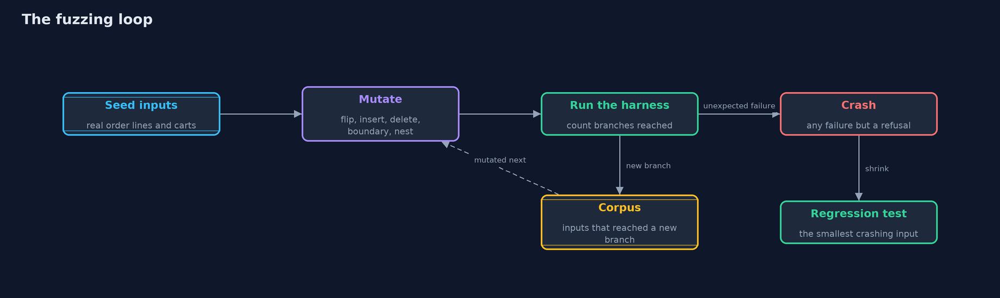
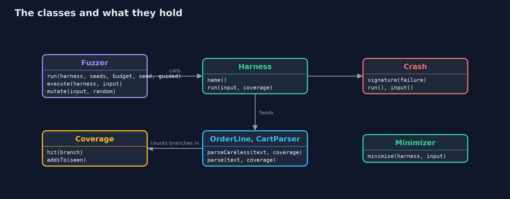
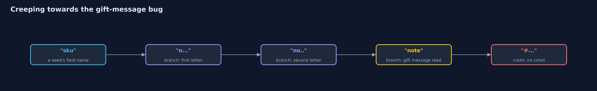
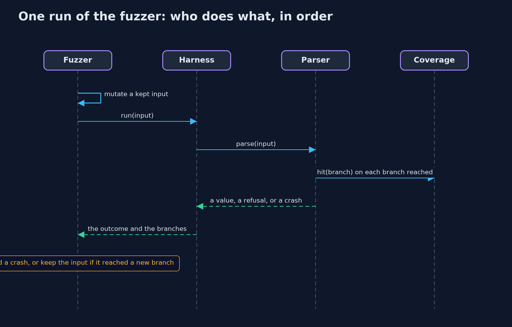

Fuzzing: Finding the Inputs Nobody Tested
src/main/java/com/jk/explore/security/fuzzing/
├── CartParser.java The store's cart format, a small subset of JSON: numbers, strings with {@code \"} and {@code \\} escapes, lists and objects
├── Coverage.java Which branches of a parser one run reached
├── Crash.java An unexpected failure: any throwable other than {@link ParseException}, with the run that found it and the input
├── Fuzzer.java A small mutation fuzzer
├── FuzzingDemo.java Runs the online store story in five numbered acts and prints exact, repeatable results
├── Harness.java What a fuzzer calls: one parser, given raw bytes
├── Minimizer.java Delta debugging: removes pieces of a crashing input for as long as it still crashes the same way, first in large pieces and then in smaller ones, until no single character can be removed
├── Money.java An amount of money in cents
├── OrderLine.java One line of the store's order import file: {@code SKU,quantity,unit price in cents}, such as {@code SHO-1042,2,8990}
├── ParseException.java The one failure a parser is allowed to have: "this input is not valid"
└── Value.java A value in the store's small cart format: a number, a string, a list or an object, as in JSON
Example tests only check the inputs someone thought of; a fuzzer mutates real inputs by the thousand, keeps the ones that reach new code, and turns every crash into the smallest input that shows it, ready to become a regression test.
An example test checks an input someone thought of. Fuzzing checks the inputs nobody thought of: a program, the fuzzer, takes a few real seed inputs, mutates them (flips a bit, inserts or deletes a character, swaps a number for a boundary value, nests brackets deeply), runs the code under test on each one, and records every crash: any failure other than the parser's own "this input is invalid". A coverage-guided fuzzer also watches which branches of the code each input reached, and keeps every input that reached a new one, so it can creep, one branch at a time, towards code deep inside the parser. Each crash is then minimised to the smallest input that still shows it, and kept as a regression test.
The demo fuzzes an online store's two small parsers, for order import lines and for carts. Both pass their example tests and both hide ordinary bugs: a missing field, an integer overflow, unbounded recursion and an unchecked index.
Maps to: NIST SSDF PW.8 (test executable code); OWASP Top 10 2025 A10 (Mishandling of Exceptional Conditions); CWE-20 (improper input validation), CWE-190 (integer overflow), CWE-674 (uncontrolled recursion), CWE-129 (improper validation of an array index); OWASP ASVS 5.0, the chapter on validation and business logic.
The idea in everyday terms
Think of a new employee given the shop's till on day one. The manual lists the usual sales, and they all work. Then the employee presses every button, in every order, with every number on the keypad, and the till freezes when a refund is entered twice. Nobody wrote that case in the manual. A careful employee also writes down the shortest way to freeze it, so the repair can be checked, and remembers which buttons opened screens nobody had seen before, to explore from there next time.
The scenario
An online store imports order lines such as SHO-1042,2,8990 from its warehouse, and receives carts from its site in a small JSON-like format, including an optional gift message
#to:message. Both parsers pass their example tests. The demo fuzzes them blind, then guided by coverage, shrinks each crash, fixes the parsers, and fuzzes again.
Run
./gradlew run
The demo tells the story in 5 acts, each printing exact numbers that the tests check:
| Act | What it shows |
|---|---|
| 1. The example tests pass | Both parsers pass all 6 of their example tests, yet a line with only a product code crashes the order parser with an ArrayIndexOutOfBoundsException. |
| 2. A mutation fuzzer | From 2 seeds each, 20000 runs find a missing-field crash at run 86 and an overflow at run 548 in the order parser, and 100000 runs find a stack overflow from deep nesting at run 1223 in the cart parser. |
| 3. Guided by coverage | Blind, 100000 runs reach 14 branches and never find the gift-message bug; guided by coverage, keeping 10 inputs, the fuzzer reaches 18 branches and finds it at run 49776. |
| 4. From crash to fix | Delta debugging shrinks the crashes to "SHO-1042", "BAG-0007,999999999,4" and {"note":"#"; each becomes a regression test, the fixed parsers show 0 crashes in the same runs, and 2000 of 2000 valid carts round-trip. |
| 5. What fuzzing does not find | A cart with a quantity of -5 parses without a crash, so no fuzzer reports it; each parser needs a harness, builds need a budget, and Jazzer adds branch counters by itself. |
Test
./gradlew test
22 tests in DemoRunsTest, FuzzerTest, MinimizerTest, ParsersTest, RegressionTest. The fuzzer is seeded, so the tests check exact crash signatures and run numbers. The smallest crashing inputs are kept in RegressionTest, and the fixed parsers are fuzzed again in the tests.
What the simulation got right, and what it left out
The fuzzer's random numbers come from the named algorithm L64X128MixRandom with a fixed seed, and the work is counted in runs, never in seconds, so every run finds the same crashes at the
same run numbers on every machine. Gradle runs the demo and the tests with -XX:-OmitStackTraceInFastThrow, so that every crash keeps its stack trace; run the classes the same way outside Gradle.
Technologies and versions
Every version below is pinned in the project's build files and was the latest stable release when the project was built.
| Technology | Version | Used for |
|---|---|---|
| Java | 25 | the language and runtime; a Gradle toolchain finds or downloads the JDK |
| Gradle | 9.8.1 (wrapper) | build and run; nothing to install, the wrapper downloads it |
| org.junit.jupiter:junit-jupiter | 6.1.3, set by junit-bom | JUnit 5: the tests (tests only) |
| org.junit.platform:junit-platform-launcher | 6.1.3, set by junit-bom | JUnit platform launcher, which Gradle needs to run the tests (tests only) |
| videokit | repository tool (tools/videokit) |
the narrated video and animation: Piper en_US-amy-medium, speed 0.8, longer pauses (the amy-slow voice) |
Learning Material
| Document | What it is for |
|---|---|
| Problem statement | the situation and what the project must show |
| Prerequisites | what you need to know first |
| Fuzzing: Finding the Inputs Nobody Tested, explained | the acts in prose |
| Session guide | a one-hour lesson with exercises |
| Animated walkthrough | the acts step by step, narrated |
| Threat model | what is protected, who could harm it, and how, using STRIDE |
| Spec | what this project must be true of |
| Expected output | the golden demo output every test and every port checks against |
The idea in one picture
Mutate, run, keep what reaches new code, record what crashes; shrink each crash into a test.

Where each piece sits
The fuzzer knows only harnesses; each harness knows one parser.

How the data moves
Each letter of note that matches is a new branch, so the guided fuzzer keeps the input and builds on it.

Who calls whom, in order

Video
video/fuzzing-explained.mp4 (with .m4a audio and .srt subtitles) is built by video/build_video.sh. Rendered media is not committed.
What it costs
- Fuzzing finds crashes, not wrong decisions. A cart with a quantity of -5 parses without a crash, so no fuzzer reports it; whether -5 is allowed is a business rule for other tests.
- Every parser needs a harness. A small piece of code that feeds the fuzzer's input to one parser and says which failures are expected.
- It takes time. A build gets a fixed budget of runs; longer runs happen at night or continuously, keeping the inputs that reached new branches for next time.
- Some crashes depend on the machine. How deep nesting must be to overflow the stack depends on the stack size, so that crash is fixed with a depth limit rather than kept as a smallest input.
- Stack traces must be kept. The JVM normally drops stack traces from exceptions thrown many times in hot code; a fuzzer names crashes by where they happened, so it switches that off.
When this is too much
A parser that only ever reads input the program wrote itself gains little from fuzzing. Any code that reads input from outside, a file format, a network protocol, a configuration language or a template, is worth a harness and a fixed budget in every build, because those are exactly the places where an input nobody tested arrives first.
Where you have already met this
- OSS-Fuzz, which fuzzes thousands of open-source projects continuously.
- Jazzer and JUnit's
@FuzzTestfor Java, and libFuzzer and AFL++ for C and C++. - Security advisories that begin "found by fuzzing".
- Property-based testing libraries such as jqwik, which generate inputs from rules.
Where this sits
This project is in the intermediate track's secure-coding module (secure-coding), after input-validation, whose rules decide what a parser may accept, and race-conditions-and-business-logic, whose logic flaws are exactly what a fuzzer cannot see.